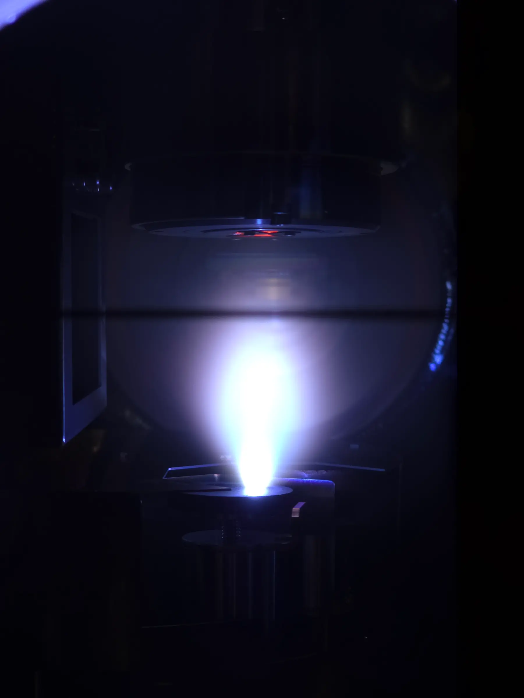

Ph.D. Candidate · Materials Science & Engineering · University of Maryland
I build laboratories
that run themselves.
Deep learning and Bayesian inference, wired directly into deposition chambers, diffractometers, and additive-manufacturing machines — so the experiment can decide what to do next while it is still running. Here is what that looks like.
The self-driving thin-film lab
Pulsed-laser deposition with a computer-vision loop closed around it. The instrument decides what to grow next while the growth is still happening.
Machine learning
The models behind the loop: instance segmentation that reads diffraction patterns as they arrive, peak fitting that turns them into numbers, and Gaussian-process Bayesian optimization deciding what to measure next.
Reading structure
Diffraction, microscopy, and microprobe work — the measurements that tell you whether the thing you made is the thing you meant to make.
Beamtime
Hardware I built, shipped to SSRL at SLAC, and ran around the clock. Synchrotron time is allocated in shifts, and nothing gets a second take.
Metal, melted
Bayesian optimization applied to laser powder direct energy deposition, with in-situ X-ray imaging built to see the melt pool as it forms.
The fab floor
Dicing, lithography, evaporation, milling. Automation only earns its keep if the sample preparation underneath it is sound.
Passing it on
Autonomous experimentation should not require a synchrotron to learn. Legolas is the cheap, teachable version of the same loop.
The written version
Everything above, in one page of text.
Publications, methods, coursework, and the full research history — formatted to read and to print.
Open résumé